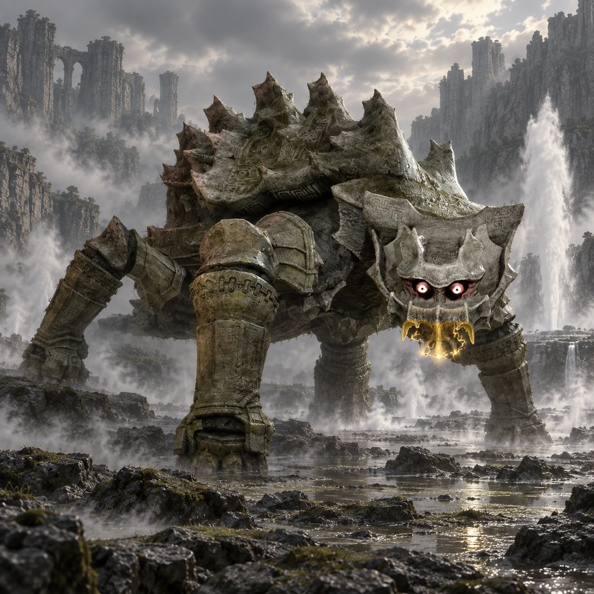

Dois nomes, duas origens
“Tortoise” é um nome de desenvolvimento. “Basaran” é o nome popular entre os fãs, não um nome próprio apresentado durante o jogo.

Colosso 09 · Terras Proibidas
Uma carapaça sob o céu escuro.
Basaran surge em uma planície coberta de névoa e fontes de vapor. Sua carapaça parece um pedaço do terreno que ganhou movimento.
Conheça o gigante01 / O gigante
O dorso amplo e elevado lembra uma tartaruga monumental. Patas grossas sustentam uma carapaça irregular, marcada por formas rochosas e saliências.
Sua presença combina com a paisagem árida ao redor. Entre ataques à distância e passos pesados, o colosso obriga Wander a acompanhar o espaço inteiro da arena.
*Altura e comprimento seguem as estimativas da Colossipédia, citada nas fontes. Os valores variam entre fontes e escalas; são referências aproximadas, não medidas oficiais confirmadas.
02 / O caminho
Atravesse a ponte a oeste do santuário e siga para noroeste. A vegetação cede lugar a uma área escura, com névoa mais densa.
Os gêiseres identificam a planície. Aproxime-se da grande caverna na borda do terreno, mantendo Agro por perto para percorrer a área.
Abrir mapa das Terras Proibidas03 / Um olhar mais atento
“Tortoise” é um nome de desenvolvimento. “Basaran” é o nome popular entre os fãs, não um nome próprio apresentado durante o jogo.
A concentração de nuvens sobre a região pode ser vista à distância, antes da chegada aos gêiseres.
Os jatos de água interrompem o chão aparentemente inerte e dão à arena um ritmo próprio.
04 / O encontro
Algumas pistas para começar, deixando a descoberta da luta com você.
Dicas gerais para o modo Normal. A ficha não detalha todos os pontos vitais nem o desfecho do confronto.
Ficha baseada em registros da comunidade e guias de jogo. A arte é uma interpretação visual, não uma captura do jogo.